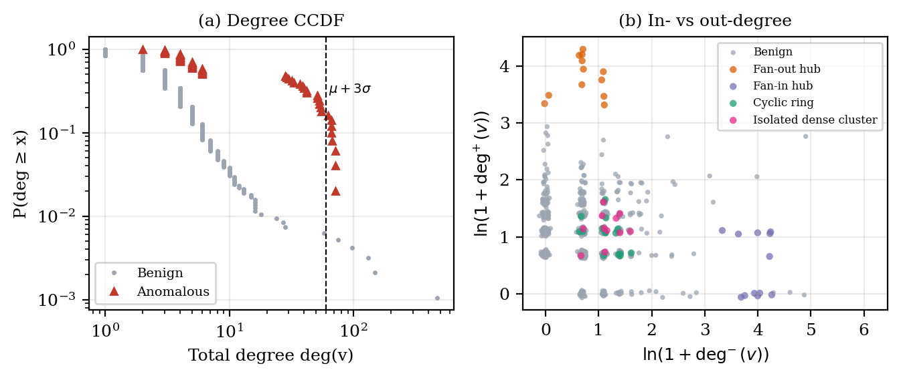
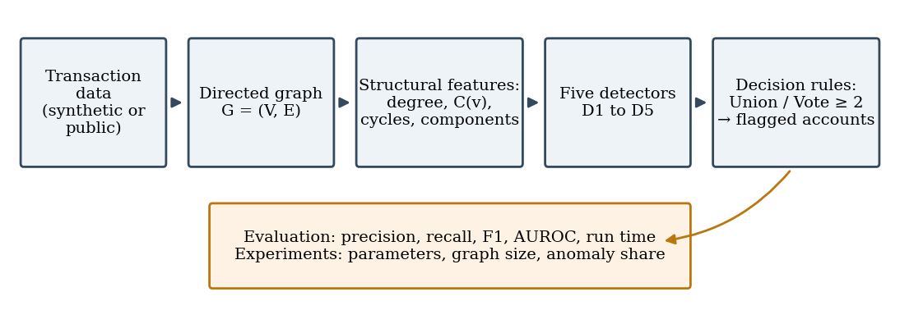
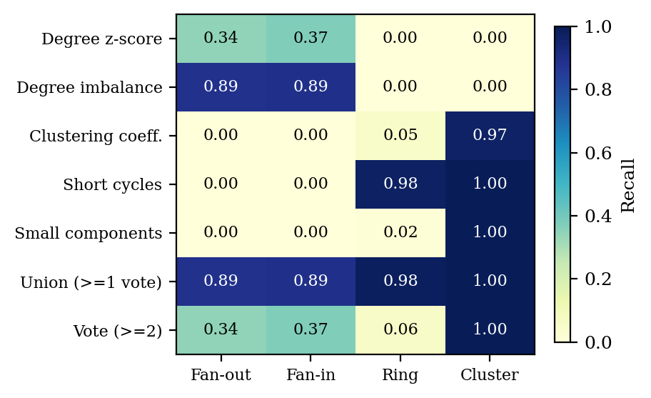
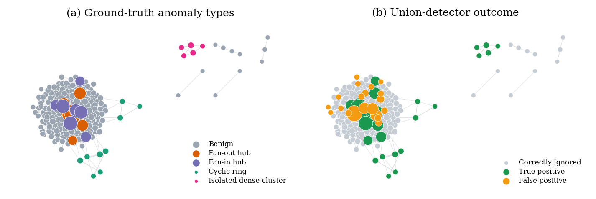
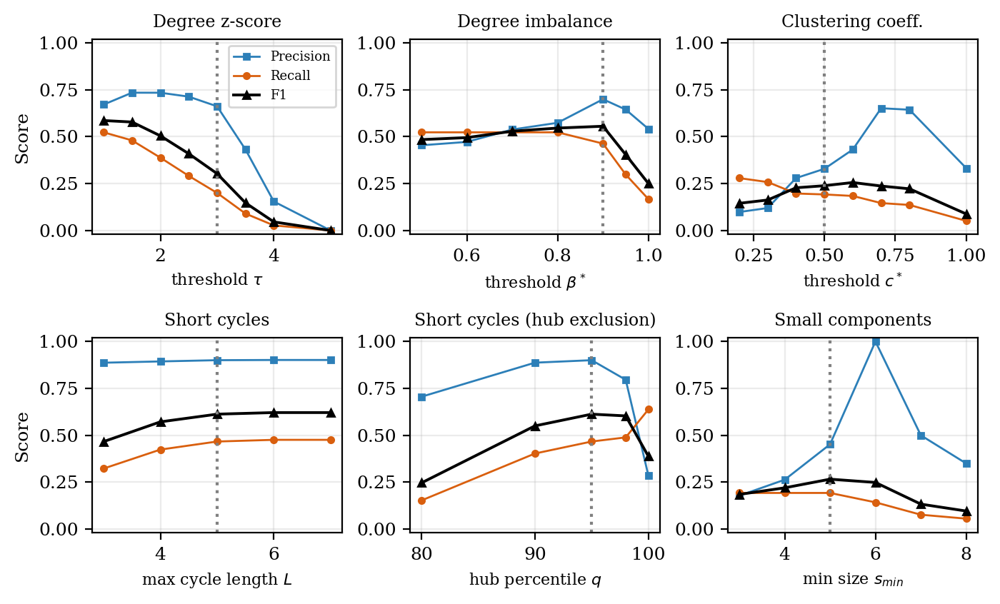
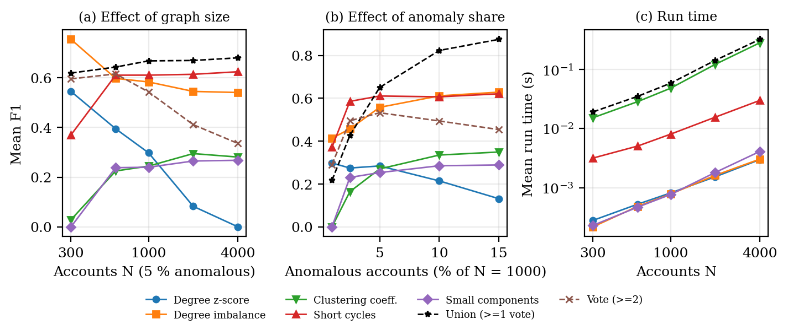

Spotting suspicious accounts in blockchain networks — by their shape alone.
Every blockchain transfer is an arrow from one account to another. Fraud leaves a recognisable shape in that web of arrows. This site lets you build the web, hunt for the shapes, and test the paper's claims yourself.
Start the story ↓Jump to the detective bench
Paper: “Graph-Property-Based Detection of Suspicious Accounts in Blockchain Transaction Networks: Degree, Subgraph, Cycle and Connectivity Analysis”.
Team: [Team member 1–7 – USN] · [Department, Institution] · Course faculty: [Name] (fill in before presenting)
Money flows form a graph
Public blockchains such as Bitcoin record every transfer between pseudonymous addresses. Treat each account as a dot and each transfer as an arrow, and the whole ledger becomes a directed graph.
Illicit activity tends to leave structural traces in that graph: a scam address collects small payments from many victims; a distributor scatters funds to many fresh addresses; groups pass funds round in closed loops to fake trading volume (wash trading). Spotting these matters to exchanges, auditors and regulators — and it is a compact, real problem for applying core DMGT ideas: vertex degree, subgraphs, paths, cycles and connectivity.
Try it: the four suspicious shapes
Click a shape to see it animate on a tiny network.
T1 · Fan-out hub
One account scatters money to many fresh accounts.
Caught by: degree imbalance.
Very large out-degree, 0–2 incoming; d ∈ {25…70}.
T2 · Fan-in hub
Many accounts pour money into a single account.
Caught by: degree imbalance.
Very large in-degree, 0–2 outgoing; mirror of T1.
T3 · Cyclic ring
3 to 6 accounts pass money round a loop to fake activity.
Caught by: short cycles.
Directed cycle + chords, only a few links to everyone else. D4 searches loops of length 3–5; a 6-ring is still caught through its chords or reverse edges.
T4 · Isolated dense cluster
5 to 8 tightly linked accounts cut off from everyone else.
Caught by: clustering, small components, cycles.
Own weakly connected component, pair-link probability 0.8.
The graph-theory toolkit
Every detector in this project is one textbook idea from Discrete Mathematics, turned into code. Play with them first — build a tiny network and watch the numbers update.
Degree
How many links an account has. Out-degree = how many different accounts it sent to, in-degree = how many different accounts sent to it. Repeat transfers between the same pair count once; amounts are ignored.
The directed handshaking lemma: every edge adds exactly one to one out-degree and one to one in-degree.
Paths, cycles, components
A cycle is a loop of transfers that returns to its starting account. A component is a group of accounts connected to each other but cut off from everyone else.
A vertex lies on a directed cycle ⇔ its strongly connected component has ≥ 2 vertices. Weakly connected components = components of the underlying undirected graph Ĝ.
Clustering & subgraphs
How many of an account's neighbours are also linked to each other? 1 means “all my friends know each other”.
t(v) = edges among the neighbours of v (triangles through v), k(v) = degree in Ĝ. Induced subgraph G[S] keeps only the edges inside S.
z-score and the Cantelli guarantee
Cantelli's one-sided Chebyshev inequality says at most a fraction 1/(1+τ²) of vertices can have z ≥ τ, whatever the distribution. At τ = 3 that is at most 10%. It is a ceiling, not a typical value — on heavy-tailed data far fewer accounts cross 3σ, which is exactly the problem we meet in §6.
The question we asked
Given only the shape of a directed transaction graph, which structural properties best identify suspicious accounts — and how do those properties behave as thresholds, graph size and the share of suspicious accounts change?
Formal statement (§2.2)
Let G = (V, E) be a directed transaction graph with |V| = N accounts and S* ⊆ V the unknown set of suspicious accounts. From the topology of G alone, compute Ŝ ⊆ V that maximises F1(Ŝ, S*). The task is deliberately not trivial: honest exchange-like hubs also have extreme degree and are often one-sided, and honest small components of 2–5 accounts also exist.
① Model
Model a transaction network as a directed graph and define four archetypes of suspicious behaviour.
② Design
Design five topology-only detectors from degree, clustering, cycle and connectivity properties, plus two rules to combine them.
③ Compare
Compare them with precision, recall, F1 and AUROC against ground truth.
④ Experiment
Run three controlled experiments: sensitivity to parameters, effect of graph size, effect of the proportion of fraud.
⑤ Explain
Find which structural signal catches which behaviour, and where each signal fails.
Ground rules (assumptions)
- Only topology is used.
- A static snapshot; repeated transfers collapse into one edge.
- One account = one vertex.
- Ground truth is exact because we plant it.
- Default parameters fixed in advance.
Where this fits in related work
Surveys
Anomaly detection is broad [5]; graph-based methods are organised by whether they score vertices, edges, subgraphs or whole graphs [6]. We score vertices.
Learned models
Graph convolutional networks on the labelled Elliptic Bitcoin graph [7] work well but need labels and are opaque.
Our route
Simple, explainable detectors defined directly by DMGT properties — each flag comes with a stated structural reason, and each detector can be analysed mathematically.
A test world with known answers
Real blockchains don't come with exact fraud labels. So we build the world ourselves: an honest network with big exchange-like hubs, then we secretly plant the four kinds of fraud. Now every detector can be graded against the truth.
How the world is built (Table 1)
Paper's example graph (Table 2, seed 0)
Compare with the live statistics in the builder above: same recipe, different random numbers, so the figures are close but not identical.
scale_free_graph.The synthetic data, ready to use
Every network in this project is synthetic: an honest, exchange-heavy network built from a seed, with fraud planted on top. That is why the answer key is exact. The detectors only ever see the arrows; the labels are used afterwards to mark their work.
① Honest backbone
A directed scale-free graph (Bollobás et al.) gives a few huge exchange-like hubs and many small accounts. About 6% of honest accounts sit in tiny isolated groups of 2–5.
② Plant the fraud
25% fan-out hubs, 25% fan-in hubs, 30% rings (3–6 accounts), 20% isolated clusters (5–8 accounts) of the fraud budget. Leftover budget that cannot form a ring or cluster becomes fan-out hubs.
③ Keep the answer key
Each account is saved with its true type and group, plus the degrees the detectors compute from. Nothing about amounts or time: the study is topology only.
Files shipped in data/synthetic/
nodes.csv: one row per account
edges.csv: one row per transfer
Parallel transfers collapse into one edge; self-loops are removed. Checks that hold for every file: Σ out-degree = Σ in-degree = |E| (the directed handshaking lemma) and mean degree = 2|E|/|V|.
Regenerate any time: node tools/generate_dataset.js (add --full for the paper's 15 instances per size and share).
Why synthetic?
Public labelled graphs exist (the Elliptic transaction graph, SNAP trust networks), but they either lack exact structural ground truth or cannot be varied in size and fraud share. A generator lets every experimental factor be controlled and every result be reproduced from a seed.
--full).Why degree alone fails
The obvious rule — “flag accounts with far more links than average” — sounds right. On real-looking data it fails, because honest exchange-like hubs exist. They are so big they stretch the “average”, and the fraud hubs hide beneath the cut-off. (σ, “sigma”, is the usual measure of how spread out the degrees are; the rule flags anyone more than 3σ above average.)
Heavy tail
Paper's example: busiest honest account has degree 471, median is 3, σ = 18.3 is five times the median.
Cut-off lands too high
μ + 3σ ≈ 60 sits above most planted hubs (degree 25–70). Mean cut-off: ≈ 45, 56, 85 at N = 300, 1000, 4000.
Honest hubs look like fraud
Planted hubs sit on the axes (only send / only receive) — but so do some honest hubs. Degree alone can't tell them apart.

How the method works
Click a stage to jump to it. Every flag ends with a plain-language reason.

Two ways to combine the five detectors
Union — flag an account if any detector fires. Maximises recall: you catch almost everything, at the price of false alarms.
Vote ≥ 2 — flag only if two or more detectors agree. Favours precision: fewer false alarms, but you miss more.
Parameters (defaults, fixed in advance)
Exception: q = 95 was chosen after a small pilot on seeds 1–3 (which overlap the evaluation seeds) because q = 100 was clearly worse — see “Honest limits”.
Table 3 — detectors, default parameters and time complexity (Δq = maximum degree in Gq).
Look inside the cycle detector (D4)
D4 is the best single detector. Here it is, step by step, on a real neighbourhood: a reverse breadth-first search measures how far every account is from the start, then a depth-first search walks forward and abandons any path that can no longer close into a loop of at most 5 steps.
How do we measure “good”?
Three questions: Of the accounts I flagged, how many were really guilty? (precision) · Of all the guilty accounts, how many did I catch? (recall) · Can I have both? (F1). Throw the net yourself.
Two more yardsticks
AUROC — how well a score ranks guilty above innocent accounts, independent of any cut-off. Pick one fraud and one honest account at random: an AUROC of 0.887 means the score ranks the fraud higher 89% of the time. It is reported for D1–D3, which give scores; D4 and D5 give only yes/no flags, so they have none.
Random baseline — a detector flagging accounts at random gets precision equal to the fraud share: 0.05. Every rule must beat that.
Which detector wins?
Switch detectors on and off on a live network. Colours show what each one finds — and what it wrongly accuses. Hover any account to see why it was flagged.
What the paper measured ▣ paper · Table 4 · 30 instances
The full table
mean ± sd over 30 random instances · N = 1,000 · f = 5%. Best value in each column in green.
Every detector is a specialist ▣ paper · Fig. 4
Recall of each rule on each anomaly type. Values are those stated in the paper's text; “~0” = “almost none”, not given numerically. No single row is strong across the whole width.

Four findings
(i) Detectors are specialised
Degree imbalance recovers 89% of both hub types but no rings or clusters. Short-cycle search recovers 98% of rings and 100% of clusters but no hubs. Clustering and small-components find clusters (0.97 / 1.00) but almost no rings, since rings hang off the network and have sparse neighbourhoods.
(ii) Short cycles is the best single detector
F1 = 0.619, highest precision (0.915), recall 0.470 — close to the ≈ 0.52 maximum for a detector that only sees rings and clusters (26 of 50 anomalous accounts in the example graph).
(iii) Combining trades precision for recall
Union finds 93.8% of anomalies (≈ 47 of 50), best F1 = 0.655, but half its flags (≈ 47) are honest accounts — mostly from clustering (~20), small components (~13) and imbalance (~10). Vote ≥ 2 reverses it: precision 0.867, recall 0.391. Both are far above the 0.05 random baseline.
(iv) A high AUROC ≠ a good threshold
Degree z-score has the best AUROC (0.887) — it ranks fraud well — yet at τ = 3 its recall is only 0.187 and F1 0.285. Benign hubs inflate σ so much that most planted hubs (degree 25–70) fall below μ + 3σ ≈ 60.
Your turn: can you beat the algorithm? ● live
The same small instance as the paper's Fig. 3. You see only the shape — exactly the information the detectors get. Flag the 33 accounts you think are fraudulent, then compare yourself with the Union rule.

Tuning the thresholds
Every detector has knobs. Turn one at a time and watch precision, recall and F1 respond on real generated graphs. Your live run is drawn as lines; the values the paper actually states are marked with squares (▣).
Fixed 3σ is fragile
D1 falls from F1 0.586 at τ = 1 to 0.303 at τ = 3 and 0 at τ = 5.
Hub exclusion matters
Short-cycle precision drops from 0.900 to 0.285 without it (q = 100); too aggressive (q = 80) and recall falls to 0.153.
Defaults were sound
Apart from D1, defaults are within 0.02 F1 of the best setting found.
Default vs best setting ▣ Table 5
20 instances. “Best” is chosen on the same instances, so it is optimistic.

D2: a plateau and a cliff
For β* ≤ 0.8 recall is flat at 0.52 (all hubs found); beyond 0.9 it collapses. A hub with two reverse edges has β = (d−2)/(d+2) — it reaches 0.9 only when d ≥ 38. At β* = 1 only perfect sources/sinks qualify: about one third of the hubs.
D5 relies on a size gap
At smin = 6 precision is 1.000 but recall drops to 0.143: honest components in the generator have ≤ 5 accounts while planted clusters have 5–8. The detector is only as reliable as that assumption. D3 never gets above F1 0.26: only clusters have dense neighbourhoods, and low-degree honest accounts reach C ≥ 0.5 easily.
Bigger graphs
What happens when the network grows from 300 to 4,000 accounts? Hub degrees in a scale-free graph grow with size, so a fixed “3σ” rule drifts out of reach of the fraud hubs. Run the paper's size experiment in your browser.
The paper's results ▣ Tables 6 & 7
Mean F1 vs number of accounts
Run time vs number of accounts (ms)
Roughly linear in |E| except clustering (D3), whose cost grows with squared degrees: 18.5× slower vs 9.3× for D4 over an 11.7× increase in edges. Whole pipeline ≈ 0.32 s at N = 4,000. Timings: one cloud CPU core, indicative only.
Cycles are the steadiest
D4 holds F1 between 0.611 and 0.625 for every N ≥ 600. Its 0.370 at N = 300 reflects instances with ≤ 1 ring and no cluster — too few positives.
D1 degrades to zero
Largest honest degree ≈ 126, 365, 1,236 at N = 300, 1000, 4000. The cut-off passes 70 (largest planted hub) at N = 4000, so F1 = 0.
D2 slowly loses precision
F1 falls from 0.755 (N = 300) to ≈ 0.54 for N ≥ 2000: bigger graphs hold more honest hubs resembling fan-in anomalies.
Table 6 — mean F1 vs N (15 instances each). D3/D5 have nothing to find at N = 300: a 15-account budget is too small to plant a cluster.
Table 7 — mean run time (ms) vs N.

Rarer fraud, more false alarms
The Union rule always catches about 94% of the fraud. But when fraud is rare, even a small error rate on the huge honest crowd produces more false alarms than real catches. Slide the fraud share and watch the crowd.
The paper's results ▣ Table 8
Mean F1 vs share of anomalous accounts
Union at 1%: precision 0.123, ≈ 9.5 true hits vs ≈ 70 false alarms per instance → F1 0.217.
Union at 15%: precision 0.812, ≈ 143 hits vs ≈ 34 false alarms → F1 0.875. Recall barely moves (0.94–0.95); the whole change is precision.
D1 moves the opposite way
F1 falls from 0.298 to 0.131: with more planted hubs, the hubs inflate σ themselves and mask each other.
Practical consequence
F1 values are only comparable at the same prevalence. A detector deployed on a network where fraud is rare will raise many more false alarms than true detections unless it is made more selective.
What this does not prove
A good result is one you can interrogate. The paper is candid about its limits; so is this site.
1 · All data is synthetic
The anomalies were planted with the detectors' properties in mind, so D4's high recall on rings and D5's on clusters is partly by construction. The results show behaviour under controlled conditions — not accuracy on live Bitcoin or Ethereum.
2 · The honest graph is almost acyclic
Its largest strongly connected component has 44 of 1,000 vertices, so short cycles are an unusually clean signal. Real ledgers have legitimate loops (exchange deposit/withdrawal flows, change addresses), so D4 would likely lose precision.
3 · Only topology
Amounts, timestamps and address metadata are ignored; repeated transfers collapse into one edge; no entity resolution.
4 · Fixed global parameters
No adaptive or robust statistics. The generator itself has many design choices (Table 1) and results may shift if they are changed.
What-if: add legitimate loops ● beyond the paper
What a sceptic would ask
Footnotes on the numbers †
The same setting (N = 1,000, f = 5%) appears in several tables from different random instance sets, so values differ slightly. Table 4 (30 instances) is used as the headline everywhere on this site.
- Abstract “recall 0.89 / 0.98–1.00” are per-type recalls (on hubs / on rings and clusters); Table 4's 0.466 and 0.470 are overall recalls.
- Slide 6's “0.619 / 0.938 / 0.285” are D4 F1, Union recall and D1 F1 — three different metrics.
- Run-times differ between Tables 4 and 7 (e.g. D3 42.1 vs 48.0 ms) — different runs on a shared cloud core; indicative only.
- The “≈ 0.52 ceiling” for D4 comes from the seed-0 instance (26 of 50); the 30-instance average ceiling is closer to 0.48, which matches D4's saturation at 0.476 for L ≥ 6.
- “3σ ≈ 60” is the seed-0 example (5.5 + 3 × 18.26); “≈ 56” in the heavy-tail section is the mean over instances.
Key takeaways
Different shapes, different tools
Degree imbalance finds hubs; short cycles find rings and clusters.
Best single detector: short cycles
F1 0.619 with precision 0.915.
Best overall: Union of all five
Finds 94% of fraud (F1 0.655), but half its flags are false alarms.
Don't trust a fixed 3σ rule
On heavy-tailed data it misses hubs and reaches F1 = 0 at 4,000 accounts.
Also: F1 depends strongly on how common fraud is, so detectors must be compared at equal prevalence. The contribution of the DMGT approach: each detector has a precise mathematical definition, a known complexity, and an interpretable explanation for every alert.
Limits and next steps
- Repeat on real labelled data: Elliptic Bitcoin graph [7], SNAP Bitcoin trust networks [20][21], Ethereum phishing datasets
- Add amounts and timestamps with weighted and temporal graph measures
- Replace 3σ by robust or rank-based thresholds
- Use strongly connected component structure and k-core decomposition
- Learn a weighted combination of detector scores instead of fixed votes
- Whitelist known exchanges to cut false alarms
Reflection and learning outcomes
Moving from a theoretical definition (degree, cycle, component) to a working detector exposes issues the definition hides: heavy-tailed data break textbook thresholds, a detector can rank well and still classify badly, and results depend on the base rate of anomalies. Working through formulation, algorithm, implementation, experiments and statistics showed how DMGT concepts — the handshaking lemma, paths and cycles, induced subgraphs, connected components — become algorithms with measurable behaviour.
[Team: add one or two sentences of your own reflection here.]
Reproducibility
Paper: Python 3.12.3, NetworkX 3.6.1, NumPy 2.4.4, pandas 3.0.2, scikit-learn 1.8.0, SciPy 1.17.1, Matplotlib 3.10.8; every instance is generated from an integer seed. This website re-implements the generator and all detectors in plain JavaScript (js/engine.js) so you can re-run the experiments in your browser — the numbers are close to the paper's, not identical (different random generator).
Individual contributions (Table 9 — to be completed by the team)
| # | Member (USN) | Contribution |
|---|---|---|
| 1 | [Name – USN] | Literature review and reference management |
| 2 | [Name – USN] | Data generation and dataset documentation |
| 3 | [Name – USN] | Graph construction and mathematical formulation |
| 4 | [Name – USN] | Degree-based detectors (D1, D2) |
| 5 | [Name – USN] | Subgraph, cycle and connectivity detectors (D3–D5) |
| 6 | [Name – USN] | Experiments, metrics and visualisations |
| 7 | [Name – USN] | Report writing and presentation |